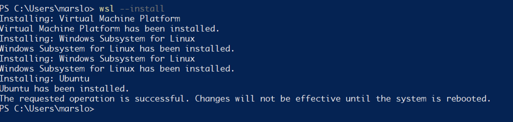
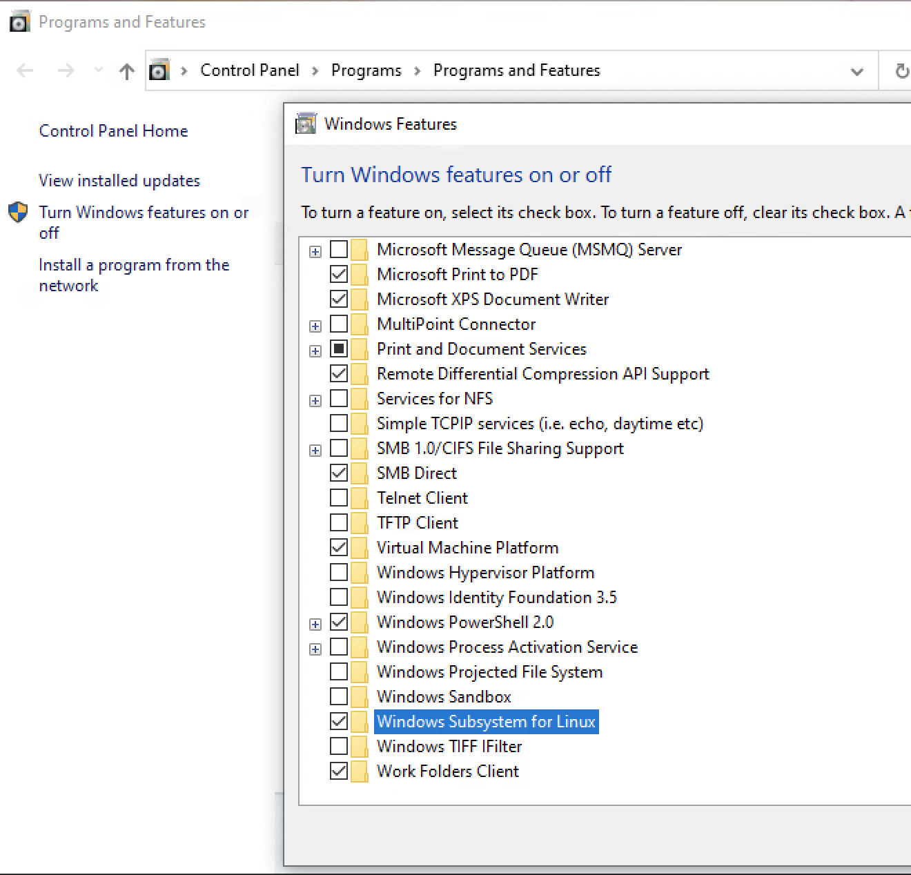
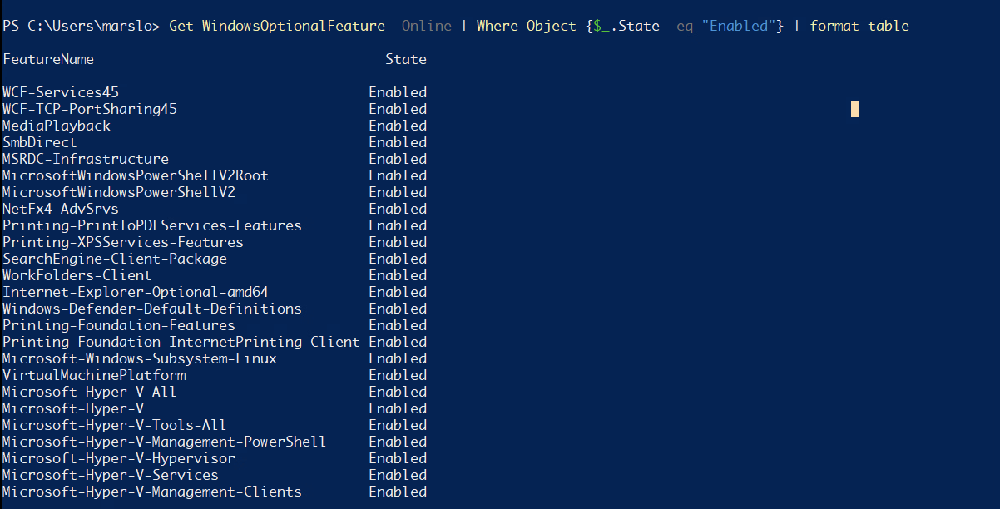
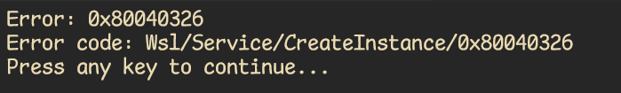
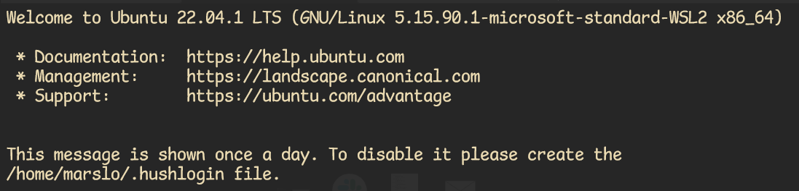

references:
wsl:
- * How to install Linux on Windows with WSL
- * Manual installation steps for older versions of WSL
- Windows Server Installation Guide
- Windows10/11 三步安装wsl2 Ubuntu20.04（任意盘）
- WSL Linux 子系统，真香！完整实操
- Install Hyper-V on Windows 10
- 在 Windows 10 上安装 Hyper-V
- Set up a WSL development environment
- Install Linux on Windows with WSL
- WSL Error code: Wsl/Service/0x80040326
- Enable 256 colour support over SSH
- * Windows Subsystem for Linux (WSL) explained
- * Advanced settings configuration in WSL
- general profile settings in windows terminal
- by default:
"startingDirectory": "%USERPROFILE%"- in wsl:
"startingDirectory": "\\\\wsl$\\DISTRO NAME\\home\\USERNAME"or"startingDirectory": "\\\\wsl.localhost\\DISTRO NAME\\home\\USERNAME"
- i.e.:
\\wsl.localhsot\Ubuntu\home\marslowindows terminal:
install
hyper-v
> Enable-WindowsOptionalFeature -Online -FeatureName Microsoft-Hyper-V -Allwsl
> wsl --install Installing: Virtual Machine Platform Virtual Machine Platform has been installed. Installing: Windows Subsystem for Linux Windows Subsystem for Linux has been installed. Installing: Windows Subsystem for Linux Windows Subsystem for Linux has been installed. Installing: Ubuntu Ubuntu has been installed. The requested operation is successful. Changes will not be effective until the system is rebooted. 1.2.2.2.1 -- wsl install more
> wsl --list --online # or > wsl --install -d <DistroName>
Microsoft-Windows-Subsystem-Linux
> dism.exe /online /enable-feature /featurename:Microsoft-Windows-Subsystem-Linux /all /norestart Deployment Image Servicing and Management tool Version: 10.0.19041.844 Image Version: 10.0.19044.2604 Enabling feature(s) [==========================100.0%==========================] The operation completed successfully.- or
> Enable-WindowsOptionalFeature -Online -FeatureName Microsoft-Windows-Subsystem-Linux
- or
VirtualMachinePlatform
> dism.exe /online /enable-feature /featurename:VirtualMachinePlatform /all /norestart Deployment Image Servicing and Management tool Version: 10.0.19041.844 Image Version: 10.0.19044.2604 Enabling feature(s) [==========================100.0%==========================] The operation completed successfully.set version to 2
> wsl --set-default-version 2 This application requires the Windows Subsystem for Linux Optional Component. The system may need to be restarted so the changes can take effect.
start up WSL
download
> cd d:\Linux > Invoke-WebRequest -Uri https://wsldownload.azureedge.net/Ubuntu_2004.2020.424.0_x64.appx -OutFile Ubuntu20.04.appx -UseBasicParsingrename
> Rename-Item .\Ubuntu20.04.appx Ubuntu.zip > Expand-Archive .\Ubuntu.zip -Verbose > cd .\Ubuntu\ > .\ubuntu2004.exe
init
> Restart-Computer
check
windows feature
appwiz.cpl
 1.2.2.2.3 -- appwiz.cpl windows features
> Get-WindowsOptionalFeature -Online | Where-Object {$_.State -eq "Enabled"} | format-table FeatureName State ----------- ----- WCF-Services45 Enabled WCF-TCP-PortSharing45 Enabled MediaPlayback Enabled SmbDirect Enabled MSRDC-Infrastructure Enabled MicrosoftWindowsPowerShellV2Root Enabled MicrosoftWindowsPowerShellV2 Enabled NetFx4-AdvSrvs Enabled Printing-PrintToPDFServices-Features Enabled Printing-XPSServices-Features Enabled SearchEngine-Client-Package Enabled WorkFolders-Client Enabled Internet-Explorer-Optional-amd64 Enabled Windows-Defender-Default-Definitions Enabled Printing-Foundation-Features Enabled Printing-Foundation-InternetPrinting-Client Enabled Microsoft-Windows-Subsystem-Linux Enabled VirtualMachinePlatform Enabled Microsoft-Hyper-V-All Enabled Microsoft-Hyper-V Enabled Microsoft-Hyper-V-Tools-All Enabled Microsoft-Hyper-V-Management-PowerShell Enabled Microsoft-Hyper-V-Hypervisor Enabled Microsoft-Hyper-V-Services Enabled Microsoft-Hyper-V-Management-Clients Enabled 1.2.2.2.4 -- windows feature check
others
mount
# /mnt/c $ cat /etc/wsl.conf [automount] root=/ # mount usb ( i.e.: F: ) $ sudo mkdir /mnt/f $ sudo mount -t drvfs H: /mnt/f # mount dvd ( i.e.: G ) $ sudo mkdir /mnt/g $ sudo mount -t drvfs G: /mnt/gwsl files stored
[!NOTE|label:references:]
> cd %USERPROFILE%\AppData\Local\Packages\[distro name] REM i.e.: > %LOCALAPPDATA%\Packages\CanonicalGroupLimited.Ubuntu18.04onWindows_79rhkp1fndgsc\LocalState\rootfs\home\pawelb.enable or disable Hyper-V
> DISM /Online /Enable-Feature /All /FeatureName:Microsoft-Hyper-V-
# 引入 posh-git Import-Module posh-git # 引入 oh-my-posh Import-Module oh-my-posh # 引入 ps-read-line Import-Module PSReadLine # 设置 PowerShell 主题 Set-PoshPrompt -Theme gmay #------------------------------- Import Modules END ------------------------------- #------------------------------- Set Hot-keys BEGIN ------------------------------- # 设置预测文本来源为历史记录 Set-PSReadLineOption -PredictionSource History # 每次回溯输入历史，光标定位于输入内容末尾 Set-PSReadLineOption -HistorySearchCursorMovesToEnd # 设置 Tab 为菜单补全和 Intellisense Set-PSReadLineKeyHandler -Key "Tab" -Function MenuComplete # 设置 Ctrl+d 为退出 PowerShell Set-PSReadlineKeyHandler -Key "Ctrl+d" -Function ViExit # 设置 Ctrl+z 为撤销 Set-PSReadLineKeyHandler -Key "Ctrl+z" -Function Undo # 设置向上键为后向搜索历史记录 Set-PSReadLineKeyHandler -Key UpArrow -Function HistorySearchBackward # 设置向下键为前向搜索历史纪录 Set-PSReadLineKeyHandler -Key DownArrow -Function HistorySearchForward #------------------------------- Set Hot-keys END ------------------------------- #------------------------------- Functions BEGIN ------------------------------- # Python 直接执行 $env:PATHEXT += ";.py" # 更新系统组件 function Update-Packages { # update pip Write-Host "Step 1: 更新 pip" -ForegroundColor Magenta -BackgroundColor Cyan $a = pip list --outdated $num_package = $a.Length - 2 for ($i = 0; $i -lt $num_package; $i++) { $tmp = ($a[2 + $i].Split(" "))[0] pip install -U $tmp } # update TeX Live $CurrentYear = Get-Date -Format yyyy Write-Host "Step 2: 更新 TeX Live" $CurrentYear -ForegroundColor Magenta -BackgroundColor Cyan tlmgr update --self tlmgr update --all # update Chocolotey Write-Host "Step 3: 更新 Chocolatey" -ForegroundColor Magenta -BackgroundColor Cyan choco outdated } #------------------------------- Functions END ------------------------------- #------------------------------- Set Alias BEGIN ------------------------------- # 1. 编译函数 make function MakeThings { nmake.exe $args -nologo } Set-Alias -Name make -Value MakeThings # 2. 更新系统 os-update Set-Alias -Name os-update -Value Update-Packages # 3. 查看目录 ls & ll function ListDirectory { (Get-ChildItem).Name Write-Host("") } Set-Alias -Name ls -Value ListDirectory Set-Alias -Name ll -Value Get-ChildItem # 4. 打开当前工作目录 function OpenCurrentFolder { param ( # 输入要打开的路径 # 用法示例：open C:\ # 默认路径：当前工作文件夹 $Path = '.' ) Invoke-Item $Path } Set-Alias -Name open -Value OpenCurrentFolder #------------------------------- Set Alias END ------------------------------- #------------------------------- Set Network BEGIN ------------------------------- # 1. 获取所有 Network Interface function Get-AllNic { Get-NetAdapter | Sort-Object -Property MacAddress } Set-Alias -Name getnic -Value Get-AllNic # 2. 获取 IPv4 关键路由 function Get-IPv4Routes { Get-NetRoute -AddressFamily IPv4 | Where-Object -FilterScript {$_.NextHop -ne '0.0.0.0'} } Set-Alias -Name getip -Value Get-IPv4Routes # 3. 获取 IPv6 关键路由 function Get-IPv6Routes { Get-NetRoute -AddressFamily IPv6 | Where-Object -FilterScript {$_.NextHop -ne '::'} } Set-Alias -Name getip6 -Value Get-IPv6Routes
q&a
Error: 0x80040326
issue
Error: 0x80040326 Error code: Wsl/Service/CreateInstance/0x80040326 1.2.2.2.5 -- 0x80040326 solution
# start powershell with administrator > wsl --update Checking for updates. Updating Windows Subsystem for Linux... > wsl --shutdown > wsl -d ubuntu To run a command as administrator (user "root"), use "sudo <command>". See "man sudo_root" for details. 1.2.2.2.6 -- 0x80040326
run-detectors: unable to find an interpreter
[!INFO|label:references:]
# execute in wsl2
sudo update-binfmts --disable cli
- more
$ mount | grep binfmt_misc binfmt_misc on /proc/sys/fs/binfmt_misc type binfmt_misc (rw,relatime)
tip
> set "PATH=%ConEmuBaseDirShort%\wsl;%PATH%" & %ConEmuBaseDirShort%\conemu-cyg-64.exe --wsl -cur_console:pm:/mnt
enable windows programe in wsl
$ cat /etc/wsl.conf [interop] enabled=falseappend windows path
- via regedit
> REG ADD "HKEY_CURRENT_USER\SOFTWARE\Microsoft\Windows\CurrentVersion\Lxss" /v AppendNtPath /t REG_DWORD /d 0x00000000 - via
wsl.conf$ cat /etc/wsl.conf [interop] appendWindowsPath=false
- via regedit
wsl or ubuntu
[!TIP]
uname -r$ uname -r | grep -q "Microsoft"/proc/sys/kernel/osreleaseor/proc/version$ cat /proc/version Linux version 5.15.133.1-microsoft-standard-WSL2 (root@1c602f52c2e4) (gcc (GCC) 11.2.0, GNU ld (GNU Binutils) 2.37) #1 SMP Thu Oct 5 21:02:42 UTC 2023 $ cat /proc/sys/kernel/osrelease 5.15.133.1-microsoft-standard-WSL2
enable vim clipboard
[!NOTE|label:references:]
$ sudo apt-get install vim-gtk
$ vim --version | grep clipboard
+clipboard +keymap +printer +vertsplit
+eval -mouse_jsbterm -sun_workshop +xterm_clipboard
# or
$ sudo add-apt-repository ppa:jonathonf/vim
$ sudo apt update
$ sudo apt install vim
vimrc
set clipboard=unnamed set clipboard=unnamedplus " or set clipboard^=unnamed set clipboard^=unnamedplus
config
-
[boot] systemd=true [network] generateResolvConf = false [automount] enable = true mountFsTab = true options = "metadata,umask=22,fmask=11" [interop] enable = false appendWindowsPath = false -
# Settings apply across all Linux distros running on WSL 2 [wsl2] # Limits VM memory to use no more than 4 GB, this can be set as whole numbers using GB or MB memory=4GB # Sets the VM to use two virtual processors processors=4 # Specify a custom Linux kernel to use with your installed distros. The default kernel used can be found at https://github.com/microsoft/WSL2-Linux-Kernel # kernel=C:\\temp\\myCustomKernel # Sets additional kernel parameters, in this case enabling older Linux base images such as Centos 6 $ kernelCommandLine = vsyscall=emulate # Sets amount of swap storage space to 8GB, default is 25% of available RAM swap=4GB # Sets swapfile path location, default is %USERPROFILE%\AppData\Local\Temp\swap.vhdx swapfile=C:\\temp\\wsl-swap.vhdx # Disable page reporting so WSL retains all allocated memory claimed from Windows and releases none back when free pageReporting=false # Turn off default connection to bind WSL 2 localhost to Windows localhost localhostforwarding=true # Disables nested virtualization nestedVirtualization=false # Turns off output console showing contents of dmesg when opening a WSL 2 distro for debugging debugConsole=false # Enable experimental features [experimental] sparseVhd=true restart wsl
> wsl --list --running Windows Subsystem for Linux Distributions: Ubuntu (Default) Ubuntu-22.04 > wsl --shutdownsetup default bash
[!NOTE|label:references:]
$ echo $SHELL /bin/bash # for current account $ chsh -s /usr/bin/bash # for root $ sudo chsh -s /usr/bin/bash $ exit # re-login $ echo $SHELL /usr/bin/bash # verify in /etc/passwd
cmds
wsl --updatewsl --versionwsl --list --runningwsl --shutdownwsl hostname -iwsl -d ubuntuwsl -d Debian -u root